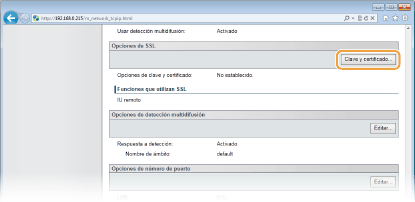
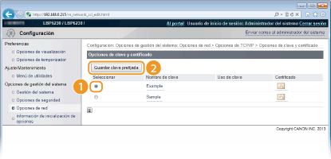
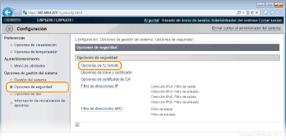
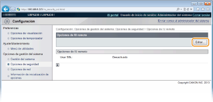
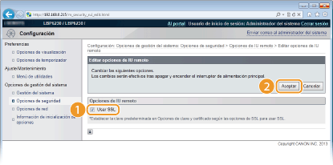

0KXF-030
Los usuarios autorizados pueden sufrir pérdidas imprevistas debido a los ataques de terceras personas malintencionadas, tales como sniffing, suplantación y manipulación de datos cuando éstos circulan por la red. Para proteger sus valiosos datos, puede cifrar la comunicación del IU remoto entre el equipo y un navegador web del ordenador utilizando la Capa de sockets seguros (SSL). SSL es un mecanismo para cifrar los datos enviados o recibidos a través de la red. SSL deberá activarse cuando se utilice el IU remoto para configurar SNMPv3. Para utilizar SSL en el IU remoto, configure un par de claves y active la función SSL. Deberá tener un par de claves listas para usar (Configuración de las opciones de los pares de claves y los certificados digitales).

|
|
|
Si utiliza SSL para cifrar la comunicación con el IU remoto, establezca la información horaria del equipo. Para ello, puede utilizar cualquiera de los siguientes métodos.
Para ajustar el reloj del sistema del equipo, utilice un servidor de tiempo de la red Configuración de SNTP
Informe al equipo sobre la hora establecida en su ordenador Sincronización del tiempo establecido en el ordenador
|
1
Inicie el IU remoto e inicie sesión en modo Administrador del Sistema. Inicio del IU remoto
2
Haga clic en [Configuración].

3
Haga clic en [Opciones de red]  [Opciones de TCP/IP].
[Opciones de TCP/IP].

4
Haga clic en [Clave y certificado] en [Opciones de SSL].

5
En la lista de claves y certificados, seleccione la clave que debe utilizarse y haga clic en [Guardar clave prefijada].


Visualización de los detalles de un par de claves o un certificado
Puede consultar los detalles del certificado o verificar el certificado haciendo clic en el vínculo de texto correspondiente que aparece debajo de [Nombre de clave], o el icono del certificado. Verificación de los pares de claves y de los certificados de CA
6
Active SSL.
|
1
|
Haga clic en [Opciones de seguridad]
 |
|
2
|
Haga clic en [Editar].
 |
|
3
|
Seleccione la casilla de verificación [Usar SSL] y haga clic en [Aceptar].
 [Usar SSL]
Para utilizar SSL en comunicación con el IU remoto marque la casilla de verificación. Desmárquela si no desea utilizar SSL.
|
7
Reinicie el equipo.
Apague el equipo, espere al menos 10 segundos y vuelva a encenderlo.
 |
|
Inicio del IU remoto con SSL activado
Si inicia el IU remoto cuando SSL está activado, es posible que aparezca una alerta de seguridad relacionada con el certificado de seguridad. En este caso, compruebe que haya introducido la URL correcta en el campo de dirección y, a continuación, continúe para visualizar el IU remoto. Inicio del IU remoto
|